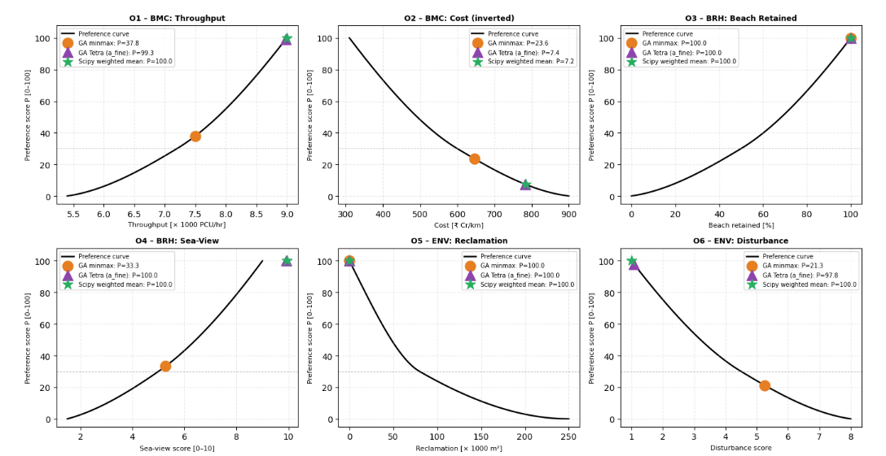
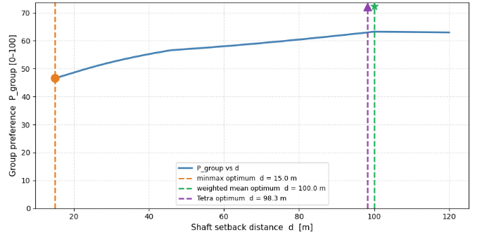
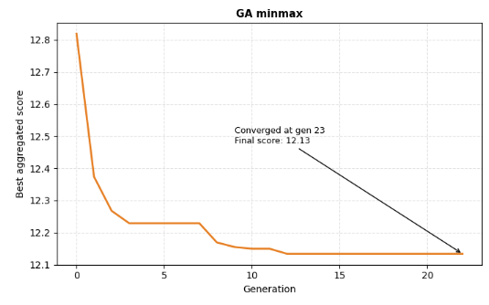
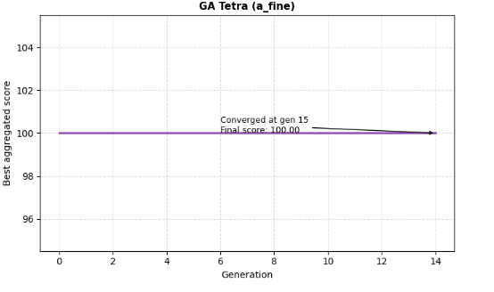

Introduction and System of Interest
Background
Mumbai, India's financial capital and its largest city with over 20 million residents, is a place where infrastructure decisions carry outsized national consequence. Mumbai's western coastal corridor is one of the city's most acute infrastructure bottlenecks. The Western Express Highway and S.V. Road operate at chronic congestion, with peak-hour journey times exceeding 90 minutes for a 20 km distance. The MCRP is a 29.2 km dedicated coastal expressway from Marine Lines to Kandivali is the strategic response, developed by the DPR consultant and reviewed by a Peer Review Committee of the Government of Maharashtra
Section 6, from Juhu Sea Side Garden to Versova (~3.2 km), is the most technically and socially complex segment. Three simultaneous constraints converge: Juhu Beach lies immediately adjacent, the Juhu Aerodrome OLS sits overhead, and the CRZ-II coastal regulation boundary governs the foreshore
Purpose of the Project


- Improve Traffic Capacity: Increase corridor throughput so the connection can accommodate existing demand and future growth.
- Deliver an Economically Realistic Solution: Keep the project financially feasible and avoid unnecessary construction cost escalation.
- Preserve the Usability of Juhu Beach: Retain as much functional beach width as possible so the beach continues to serve public, recreational, and local-use purposes.
- Protect Coastal Experience and Sea Views: Maintain openness toward the sea and avoid design choices that visually degrade the beachfront environment.
- Minimise Permanent Coastal Loss: Reduce irreversible land reclamation and limit the project’s physical footprint on the coastal edge.
- Reduce Construction-Phase Disturbance: Limit disruption to beach users, nearby activity, and the surrounding environment during execution.
- Balance Mobility with Environmental Protection: Improve transport performance without solving congestion at the expense of the beach and coastline.
- Support a Socially Acceptable Design: Favour alternatives that are easier to justify to the public and less likely to trigger opposition due to environmental or public-space impacts.
Stakeholder Analysis
Brihanmumbai Municipal Corporation(BMC)-Project Owner
BMC needs Section 6 to function as a high-capacity expressway that meaningfully reduces journey times on the western corridor. Every design decision is ultimately evaluated against two things: does it deliver enough lanes to handle projected traffic volumes, and does it stay within the project budget. Politically, BMC also needs a solution that does not invite years of litigation from affected communities, since prolonged legal challenges would delay the broader corridor and undermine the project's rationale.
Beach Users, Residents & Hoteliers
BRH needs Juhu Beach to remain what it has always been a wide, open, publicly accessible seafront that anyone can use. Beyond the beach width itself,ent in they need the construction period to be as short and contained as possible, and they need any permanfrastructure near the beach to be visually unobtrusive. For hotel operators this is partly an economic need; for daily vendors and ordinary visitors it is a matter of livelihood and quality of life.
Environmental & Coastal Stakeholders
ENV needs the Arabian Sea coastline at Section 6 to be disturbed as little as possible both permanently through reclamation and temporarily through construction activity. The coastal zone here supports intertidal habitats and fish nursery grounds that cannot be relocated or compensated. Their core need is simple: the smallest possible permanent footprint, and the shortest and most contained construction disturbance period achievable.
Conflict Mapping
The conflicts discussed in Section 6 are not incidental; they are structural in nature, arising from the physical co-location of land uses that are fundamentally incompatible. The most significant conflict is between BMC and BRH/ENV regarding reclamation. Although reclamation represents the least-cost solution for BMC, it would result in the permanent loss of the beach as an asset and cause irreversible damage to the coastal ecosystem. In other words, the cost savings achieved by BMC through reclamation come directly at the expense of the environmental and recreational values prioritized by BRH and ENV. A second conflict emerges between BMC and AAI in relation to the bridge option. While this alternative is relatively cost-competitive, its feasibility remains uncertain because it is contingent upon obtaining a No Objection Certificate (NOC), which has not yet been resolved. As a result, the option remains institutionally constrained despite its economic attractiveness. A third, more continuous conflict exists between BMC’s preference for locating shafts as close as possible to the beach edge, in order to minimize costs through shorter adits, and the preference of BRH/ENV for greater shaft setbacks to reduce visual intrusion and construction-related disturbance. Among these conflicts, it is this third one that is directly addressed and resolved through the a priori optimisation model.
Design Alternatives: A-Posteriori Curated Set
The four alternatives are drawn directly from official DPR and Peer Review Committee documentation. They form the a-posteriori curated set from which the MCDA selects before the a-priori models open the continuous design space.
| Alt. | Name | Type | Key Features |
|---|---|---|---|
| A1 | Straight Tunnel | Bored / NATM tunnel | Straight 4+4 lane alignment, zero beach impact and fully underground Requires ventilation shafts near beach edge. |
| A2 | Reclamation | At-grade on reclaimed land | Lowest cost; 4+4 lanes; meets geometric standards. Permanently destroys beach, eliminates sea-views, maximum reclamation footprint, certain public opposition. |
| A3 | Bridge / Sea-link | Cable-stayed or viaduct | No beach disturbance; no reclamation; cost-competitive with tunnel. Single critical issue: conditional AAI compliance NOC not granted at time of analysis. |
| A4 | Cut-and-Cover Shoreline | Cut-and-cover; beach restored above | Beach restored post-construction; intermediate cost; full AAI compliance. High construction-phase beach disruption during excavation period. |

Multi-Criteria Decision Analysis — Tetra SDM
Evaluation Criteria and Weights
The power distribution among the stakeholders was not known at the beginning, so global weights were assigned equally (0.333). Sub-criteria weights were decided by stakeholder sharing among the group members and by role-playing.
| Criteria | Weight |
|---|---|
| Project Owner(BMC) 0.333 | |
| Construction Complexity | 0.3 |
| Cost Efficiency | 0.4 |
| Lane Capacity and Design Speed | 0.3 |
| Beach Users, Residents & Hoteliers 0.333 | |
| Beach Preservation | 0.4 |
| Construction Disruption | 0.3 |
| Sea View Preservation | 0.3 |
| Environmental & Coastal Stakeholders 0.333 | |
| Marine Ecology Disruption | 0.5 |
| Reclamation Area | 0.5 |
MCDA Result Analysis
The Bridge emerges as the preferred alternative under equal stakeholder weighting, meaning it performs best when the interests of all three stakeholder groups are treated as equally important.
Although the bridge emerged as the most preferred alternative in the MCDA, a tunnel was selected in the real project. To understand this difference, we conducted a sensitivity analysis.
Sensitivity Scenarios
| Stakeholder / Alternative | Score | Rank |
|---|---|---|
| Transport Planners / Project Owner (BMC) +20% | ||
| Straight Tunnel | 85.4 | 2 |
| Reclamation | 59.8 | 4 |
| Bridge / Sea-link | 100 | 1 |
| Cut-and-Cover Shoreline | 82 | 3 |
| Beach Users, Residents & Hoteliers (BRH) +20% | ||
| Straight Tunnel | 96.4 | 2 |
| Reclamation | 26.4 | 4 |
| Bridge / Sea-link | 100 | 1 |
| Cut-and-Cover Shoreline | 83.6 | 3 |
| Environmental & Coastal Stakeholders +20% | ||
| Straight Tunnel | 91.5 | 2 |
| Reclamation | 25.7 | 4 |
| Bridge / Sea-link | 100 | 1 |
| Cut-and-Cover Shoreline | 77 | 3 |
| Stakeholder / Alternative | Score | Rank |
|---|---|---|
| Transport Planners / Project Owner (BMC) −20% | ||
| Straight Tunnel | 96.5 | 2 |
| Reclamation | 15.6 | 4 |
| Bridge / Sea-link | 100 | 1 |
| Cut-and-Cover Shoreline | 79.7 | 3 |
| Beach Users, Residents & Hoteliers (BRH) −20% | ||
| Straight Tunnel | 85.9 | 2 |
| Reclamation | 47.4 | 4 |
| Bridge / Sea-link | 100 | 1 |
| Cut-and-Cover Shoreline | 78.1 | 3 |
| Environmental & Coastal Stakeholders −20% | ||
| Straight Tunnel | 90.8 | 2 |
| Reclamation | 49 | 4 |
| Bridge / Sea-link | 100 | 1 |
| Cut-and-Cover Shoreline | 84.9 | 3 |
MCDA Sensitivity — P_group by Scenario
Normalised group preference scores for A1–A4 across all eight Tetra SDM weight scenarios
As shown in the sensitivity analysis, the Bridge / Sea-link remains the preferred alternative across all ±20% weight adjustments for the three stakeholder groups. In every case, the ranking order stays unchanged, with the Straight Tunnel consistently in second place, the Cut-and-Cover Shoreline in third, and Reclamation in fourth. This indicates that the MCDA outcome is highly robust to moderate changes in stakeholder priorities, as no rank reversal occurs under any of the tested scenarios. Since the Bridge remains dominant even when the relative importance of the stakeholder groups is varied, the next step is to explore whether more extreme weight changes would be required to produce a different preferred alternative.
Effect of Extreme Weighting on Alternative Rankings
Sensitivity testing across many weighting scenarios showed that the Bridge remained the preferred alternative in almost all cases, confirming the robustness of the baseline result. To better understand stakeholder preference dynamics, more extreme weight shifts were explored. These tests showed that the Tunnel only becomes the most favourable option when Beach Users, Residents, and Hoteliers are given a dominant weight, whereas the Bridge remains the top choice when either the Project Owner or the Environmental and Coastal Stakeholders are prioritised. This strategic rebalancing is important because it helps reveal which stakeholder interests truly drive the final decision and whether the preferred solution remains stable under changing priorities.
Realistic Scenario
For the realistic scenario, the stakeholder weights were adjusted to better match how decisions around the Mumbai Coastal Road are likely made in practice on the basis of infromation from DPR reports and interviewing project officials. The project is primarily driven by the need to reduce congestion and improve movement along Mumbai’s western corridor, so the interests of Transport Planners and the Project Owner remain highly important. Official project material consistently frames the Coastal Road as a mobility project intended to decongest existing roads and strengthen corridor capacity.
However, in Section 6, the interests of Beach Users, Residents, and Hoteliers are also highly significant. Juhu Beach is an important public recreational space, and the project documents themselves acknowledge that construction in this area could affect beach use and the retained beach line. Because this section also sits within a socially and economically sensitive coastal area, local user interests were treated as equally influential to the project owner’s interests.
The Environmental and Coastal Stakeholders were given a slightly lower weight, but still a substantial one. This is because environmental actors may not always dominate the political decision, yet the project remains constrained by CRZ rules, environmental clearances, and impact assessment requirements. In other words, environmental interests may not set the agenda, but they still impose real limits on what can be approved and built.
Accordingly, the realistic scenario uses stakeholder weights of 0.35, 0.35, and 0.30 for BMC/Project Owner, Beach Users, Residents and Hoteliers, and Environmental and Coastal Stakeholders, respectively.
Effect of AAI Airspace Compliance on the Final Decision
Although the stakeholder analysis identified the Bridge as the most feasible option under equal weighting, a separate hard constraint ultimately made this alternative unsuitable. The Airport Authority of India (AAI) regulates the protected airspace above Juhu Aerodrome, and the proposed runway extension introduces an Obstacle Limitation Surface (OLS) that restricts the allowable height of structures in this zone. As an elevated structure, the Bridge does not satisfy this requirement and could not be considered a viable final option.
For this reason, AAI was treated as a hard engineering constraint rather than a preference-based criterion — a binary requirement that either holds or eliminates an alternative entirely, with no possibility of trade-off. The Straight Tunnel, which ranked second in the equal-weight stakeholder analysis, satisfies this requirement unconditionally because it runs fully underground. It therefore emerged as the final preferred alternative in practice.
After the MCDA and the application of the AAI airspace constraint, the feasible solution space narrows to tunnel-based configurations. The preliminary 2×2 model is therefore introduced as the first open glass-box optimisation step to explore the key remaining trade-off within this tunnel-feasible space. Rather than modelling the full problem immediately, the 2×2 formulation focuses on the main continuous conflict between reducing project cost and limiting beach-side construction impact.
A-Posteriori Limitation
The MCDA framework selects from four predefined alternatives, but it does not examine whether any of these alternatives represents the best possible configuration within its broader structural category. In all four cases, the ventilation shaft setback was implicitly assumed to remain close to the DPR minimum of 25 m. As a result, the analysis did not consider whether larger setbacks such as 50 m, 70 m, or 100 m might lead to a more preferred outcome from a group decision-making perspective. This limitation provides the direct rationale for introducing the a priori optimisation models developed in Sections 5 and 6.
Preliminary 2×2 Optimisation Model
The MCDA was used as an a-posteriori screening step to compare the four curated planning alternatives and to make the stakeholder trade-offs explicit. However, once the AAI airspace constraint excluded the Bridge alternative, the feasible design space narrowed to tunnel-based configurations. At that point, the problem changed from selecting between discrete alternatives to optimising the remaining continuous tunnel design decisions. For this reason, a preliminary 2×2 open glass-box model was developed as the first optimisation step.
The 2×2 model is intentionally simplified. Its purpose is not to capture the full complexity of Section 6, but to reveal the first internal trade-off within the tunnel-feasible design space. The model focuses on two conflicting objectives — construction cost and construction disturbance — and on the two tunnel design variables that influence them most directly.
A larger shaft setback distance moves the shaft works farther away from the beach interface, which reduces visible and spatial disturbance for beach users, residents, and nearby activities. However, this also increases the cost of access and adit construction.
A greater tunnel depth reduces surface nuisance such as vibration and localised disturbance, but it also increases tunnelling cost because deeper excavation requires more complex construction and waterproofing measures.
Preference Curves
Since the 2×2 model contains one cost objective and one disturbance objective, equal weights are used as a neutral baseline.

Contour Plot

The contour plot shows the combined preference across the (d, z) design space. Preference improves most strongly with increasing shaft setback distance, while tunnel depth provides additional but weaker improvement. The best feasible region is therefore located at high d and moderate-to-high z.
Pareto Front — The Structural Proof

The Pareto front shows the efficient trade-off between construction cost and construction disturbance. Along this front, improving one objective further can only be achieved by sacrificing the other.
Optimisation Results

The plots show where each optimisation paradigm lands on the preference curves for construction cost and construction disturbance. The minmax paradigm equalises both scores at the fairness floor, while the weighted mean achieves the highest combined preference by accepting a moderate cost penalty.
Interpretation
The 2×2 model demonstrates that the tunnel is not one fixed solution but a family of configurations whose performance varies continuously with shaft setback and tunnel depth. By making this internal trade-off explicit, the model reveals the first Pareto frontier within the tunnel-feasible design space — showing that no single configuration simultaneously minimises both cost and disturbance. This finding directly motivates the extended 4×6 model, which opens the full design space with four variables and six objectives to find the best achievable tunnel configuration across all stakeholder groups.
Full 4-Variable 6-Objective Optimisation Model
Optimisation Problem
After the preliminary 2×2 model, the optimisation was extended to a 4×6 formulation to capture a broader part of the tunnel-feasible design space. The purpose of this model is to include the main remaining concerns of BMC, BRH, and ENV within one preference-based framework, while keeping the Bridge excluded through the AAI hard constraint.
Design Variables
The extended model uses four design variables:
| Symbol | Variable | Description | Lower | Upper |
|---|---|---|---|---|
| x₁ = n | Lane-equivalent capacity | Number of traffic lanes per direction. Sets the throughput capacity of the tunnel corridor. | 3 | 5 |
| x₂ = d | Shaft setback distance [m] | Horizontal distance of ventilation shafts from the beach edge. Larger setback reduces beach-side disturbance but increases adit construction cost. | 15 m | 120 m |
| x₃ = z | Tunnel axis depth [m] | Depth of the tunnel centreline below surface. Greater depth reduces surface nuisance but increases tunnelling cost and complexity. | 10 m | 40 m |
| x₄ = Lt | Tunnelled frontage length [km] | Length of the tunnelled section covering the Juhu Beach frontage. Longer spans protect more beach but increase total construction cost. | 1.8 km | 3.2 km |
Objective Functions
Traffic Throughput
HCM standard: 1,800 PCU/lane/hr at design speed. Linear in n — each lane adds exactly one lane-capacity. Takes only n as argument.
Construction Cost
Baseline 280 Cr/km scaled by tunnelled length. Lane premium +85(n−4) per km. Shaft adit cost +0.8d. Depth premium +12(z−10) per km of tunnel.
Surface Noise / Vibration Nuisance
Exponential decay in tunnel depth. Shallower tunnels transmit more vibration and surface nuisance to beach users and residents. Deeper alignment reduces this impact rapidly.
Sea-View Openness
As shaft setback d increases, the exponential term decreases toward zero, giving a higher sea-view openness score. Larger setbacks reduce the visual intrusion of shaft structures near the beach edge.
Construction Disturbance
Composite disturbance score weighted across three drivers: shaft proximity to the beach (50%), tunnel shallowness causing surface impact (20%), and tunnelled frontage length driving overall construction duration (30%).
Marine Ecology Disturbance
Weighted combination of shaft proximity to the coastal edge (70%) and tunnelled frontage length (30%). Larger setbacks and shorter tunnelled lengths reduce the ecological disturbance footprint in the intertidal zone.
Preference Functions
Each raw objective value is converted to a Tetra ratio-scale preference score P ∈ [0, 100] using PCHIP (Piecewise Cubic Hermite Interpolating Polynomial) interpolation, which guarantees monotone, non-overshooting curves. For inverted objectives — construction cost (O2), construction disturbance (O5), and marine ecology disturbance (O6) — lower raw values map to higher preference scores. A P=30 reference line is shown on each curve as the calibration threshold.

Preference curves for all six objectives. O1 (throughput) and O4 (sea-view) are maximised; O2 (cost), O3 (surface noise), O5 (disturbance), and O6 (marine ecology) are inverted — lower raw scores yield higher preference.
Weights and Constraints
Stakeholder Weights
Two weight scenarios are applied to test the robustness of the optimisation result across different assumptions about stakeholder importance.
Sub-Criterion Weights
| Stakeholder | Objective | Sub-weight | Rationale |
|---|---|---|---|
| BMC | O1 — Traffic Throughput | 0.55 | Capacity is the primary mandate |
| O2 — Construction Cost | 0.45 | Cost discipline is a close secondary concern | |
| BRH | O3 — Surface Noise / Vibration | 0.40 | Direct daily nuisance to residents |
| O4 — Sea-View Openness | 0.60 | Dominant public concern for beach users | |
| ENV | O5 — Construction Disturbance | 0.50 | Temporary but significant coastal impact |
| O6 — Marine Ecology Disturbance | 0.50 | Permanent ecological footprint equally weighted |
Design Constraints
Three Optimisation Paradigms
GA minmax
Maximises the minimum preference score across all six objectives simultaneously. Ensures no stakeholder is left severely behind. 500 individuals, 500 max generations, stall=10.
GA Tetra (a_fine)
Connects to Tetra web service at choicerobot.com applying the Tetra IMAP algorithm. Each candidate sends preference scores via HTTP; web service returns normalised rank score. 200 individuals, 300 max generations.
Scipy SLSQP Weighted Mean
Gradient-based optimisation maximising weighted arithmetic mean of all six preference scores. 50 random starting points. Serves as verification of Tetra results and efficiency reference.
Full Model Results
Three-Paradigm Comparison
All three paradigms converge on one critical finding but diverge substantially on shaft setback and lane count. A divergence that is analytically revealing.
| Variable / Score | GA minmax | GA Tetra (a_fine) | Scipy Weighted Mean |
|---|---|---|---|
| L - Span length | 2.177 km | 2.571 km | 1.800 km |
| n - Lanes per direction | 4 | 5 | 5 |
| w - Reclamation width ← KEY | 0.0 m ✓ | 0.0 m ✓ | 0.0 m ✓ |
| d - Shaft setback | 15.0 m | 98.3 m | 100.0 m |
| P_BMC | 31.4 | 57.9 | 58.2 |
| P_BRH | 73.3 | 100.0 | 100.0 |
| P_ENV | 60.6 | 98.9 | 100.0 |
| P_group | 46.6 | 72.1 ◄ Best | 72.5 |
Preference Scores at the Tetra Optimum (d=98.3 m, n=5)
Tetra (a_fine) Preference Score Breakdown
Individual objective scores at the Tetra optimal configuration — GA Tetra finds d=98.3 m, n=5, w=0
The bar chart tells a precise story about what the Tetra aggregation is trading off. Five of the six objectives score at or near 100 — beach retention (O3), sea-view (O4), reclamation footprint (O5), construction disturbance (O6), and throughput (O1) all reach near-maximum preference. The single outlier is O2 construction cost at P=7.4, reflecting the high unit cost of 782.9 Cr/km driven by five lanes and a 98.3 m shaft setback.
The combined effective weight of BRH and ENV objectives is 0.505 out of the normalised total, giving them slightly more than half the aggregate influence. With BRH scoring 100.0 and ENV scoring 98.9, the aggregate overwhelmingly rewards this configuration even though BMC's cost preference is nearly eliminated. The Tetra paradigm finds this trade-off optimal: five stakeholders near-perfectly satisfied at the cost of one stakeholder absorbing a large sacrifice on one criterion.
This is precisely where the minmax paradigm differs. Minmax would refuse to accept P2=7.4 because it lifts the floor and it would look for a configuration where no single objective scores that low, even at the cost of a lower aggregate. The two paradigms are not disagreeing about the objective functions or the weights; they are applying different normative positions on what fairness in group decision-making means.
Preference Scores at the Minimax (d=15 m, n=4)
GA minmax — Preference Score Breakdown
Individual objective scores at the minmax optimal configuration — GA minmax finds d=15 m, n=4, w=0
The minmax bar chart shows a very different profile from the Tetra result. Instead of five bars near 100 and one near zero, the scores are spread across a much tighter range — no objective scores above 100 and the lowest score is O6 construction disturbance at P=21.3. This is the floor the minmax paradigm is maximising: the objective that scores worst determines the optimum, and the optimiser lifts it as high as possible without letting any other objective fall below it.
The binding floor at d=15 m is construction disturbance (O6) at P=21.3, driven by the shaft being at maximum proximity to the beach edge. Cost (O2) at P=23.6 is the next tightest constraint and the two together prevent the optimiser from moving in any direction without worsening at least one of them. Beach retention (O3) and reclamation footprint (O5) both score 100, confirming zero reclamation is the correct structural choice under all paradigms.
The stakeholder group scores reflect this pattern directly. P_BMC = 0.55×37.8 + 0.45×23.6 = 31.4. P_BRH = 0.60×100.0 + 0.40×33.3 = 73.3. P_ENV = 0.50×100.0 + 0.50×21.3 = 60.6. The overall P_group = 0.30×31.4 + 0.30×73.3 + 0.25×60.6 = 46.6 / 100 which is lower than the Tetra aggregate of 72.1, but with no stakeholder left as severely behind as BMC is in the Tetra solution.

The six preference curve plots make the paradigm divergence visible in a way the summary table cannot. Each panel shows the same preference curve, the mathematical relationship between a raw objective value and its preference score with three markers plotted on it: the orange circle for GA minmax, the purple triangle for GA Tetra, and the green star for scipy weighted mean.
On five of the six panels throughput (O1), beach retention (O3), sea-view (O4), reclamation footprint (O5), and construction disturbance (O6), the Tetra and weighted mean markers sit at or near the top of the curve while the minmax marker sits lower. On the cost panel (O2) the situation reverses: minmax scores higher on cost preference while Tetra and weighted mean sit near the bottom, reflecting the high unit cost of 782.9 Cr/km that comes with five lanes and a 98.3 m shaft setback.
This visual pattern confirms what the numbers say: the Tetra and weighted mean paradigms accept a severe cost penalty in exchange for near-perfect scores on every other objective, while the minmax paradigm refuses to let any single objective score as low as P=7.4 and instead finds a more evenly distributed but lower aggregate result.
Comparison: A-Priori Optimum vs A-Posteriori MCDA
| Alternative | P_BMC | P_BRH | P_ENV | P_group |
|---|---|---|---|---|
| A1 – Straight Tunnel (DPR preferred) | 55.5 | 100.0 | 90.0 | 69.1 |
| A2 – Reclamation | 78.0 | 0.0 | 2.5 | 24.0 |
| A3 – Bridge / Sea-link | 65.6 | 80.0 | 97.5 | 68.1 |
| A4 – Cut-and-Cover | 57.8 | 91.0 | 65.0 | 60.9 |
| A-priori optimum (GA minmax) | 31.4 | 73.3 | 60.6 | 46.6 |
| A-priori optimum (GA Tetra/a_fine) ◄ | 57.9 | 100.0 | 98.9 | 72.1 (+3.0 vs A1) |



Reflection and Critical Conspection
8.1 The Mixed Scoring Problem
The comparison table shows the Tetra a-priori optimum at P_group = 72.1 and A1 at 69.1, a difference of only three points. This narrow gap is misleading because the two scores come from different measurement systems.
A1 was scored by a human rater using the Tetra SDM desktop software during the MCDA exercise. That rater gave A1 a sea-view score of P = 100, reasoning that a bored tunnel runs entirely underground and causes no visual obstruction at all. The a-priori optimum, by contrast, is scored through the mathematical O4 function which does not evaluate the tunnel bore but the ventilation shaft structures that must break the surface near the beach edge. At A1's implicit DPR shaft setback of 25 m, the O4 formula gives a score of approximately P = 73, not 100. This single difference in how sea-view is measured is enough to inflate A1's position in the comparison table relative to what it would score if both alternatives used the same method.
When A1 is scored entirely through the same six mathematical functions as the a-priori optimum, its P_group falls slightly below 72.1. The a-priori model does find a genuinely better configuration and the gap just looks smaller than it is in the headline table because of this measurement inconsistency.
The real advantage of the Tetra optimum over A1 comes from three concrete design differences. First, five lanes instead of four gives O1 a score of 99.3 against A1's approximate 30. Second, a shaft setback of 98.3 m instead of 25 m brings the O4 sea-view score to 100 against A1's mathematical score of approximately 73. Third, the larger setback reduces construction disturbance substantially, with O6 scoring 97.8 against A1's approximate 21 at close shaft proximity. These are genuine engineering improvements, and their combined cost is approximately INR 466 crore over the 2.571 km span, a premium that the Tetra aggregation judges worthwhile given the preference gains they produce for BRH and ENV stakeholders.
8.2 The Three-Paradigm Divergence on Shaft Setback
All three paradigms agree on w=0 but diverge dramatically on d: minmax finds d=15 m while Tetra and weighted mean find d≈98–100 m. This 83 m difference under the same objective functions and weights is precisely the PED methodology working. As intended different aggregation paradigms reflect different normative positions on group decision-making.
The minmax paradigm maximises the minimum preference score. At d=15 m, the binding floor is O6 (construction disturbance) at P=21.3. If d increases to 50 m, O6 improves but O2 (cost) worsens. The minmax optimiser finds that at d=15 m, both O6 and O2 are approximately equally constrained, and moving d upward does not raise the overall minimum instead it trades one constraint for another. This is mathematically correct minmax behaviour.
The Tetra paradigm optimises aggregate welfare, free to let O2 drop to P=7.4 (cost 782.9 Cr/km at d=98.3 m) if it allows all other five objectives to score near 100. With combined effective weight of BRH+ENV at 0.505 of the normalised total, the aggregate overwhelmingly rewards the d=98.3 m configuration. This is also correct Tetra behaviour. The decision of which paradigm applies an equitable floor-lifting or aggregate welfare maximisation is normative and political, not technical.
8.3 The L=1.8 km Result from the Weighted Mean
The scipy weighted mean drives span length to its minimum bound of 1.8 km, which warrants explanation. Span length L appears in only two places in the model: the reclamation footprint objective O5 (f₅=w×L×1000) and the budget constraint. Since w=0 at the optimum, O5=0 regardless of L. The budget constraint at the weighted mean optimum (785 Cr/km × 1.8 km = 1,413 Cr) is well within the 4,200 Cr cap is also not binding. With no preference gradient and no binding constraint on L, the solver places it at the lower bound. This is a model limitation: span length should carry a preference signal for beach coverage which implies longer spans protect more of the beach frontage. As currently built, the model is indifferent to L when w=0, which is an acknowledged simplification.
8.4 Convergence of Both Paradigms
The two convergence plots tell fundamentally different stories, and understanding why they look so different is important for interpreting the results correctly.
GA minmax
The minmax convergence curve shows the classic pattern of a well-functioning genetic algorithm. The best aggregated score drops steeply in the first five generations as the population rapidly discovers the profitable region of the design space, then slows through generations 7 to 17 as the algorithm switches from broad exploration to fine-grained exploitation, and finally stalls for ten consecutive generations before terminating at generation 23 with a final score of 12.13. The stall at a stable value is the intended stopping condition. It confirms the algorithm found a genuine local optimum and was not cut off prematurely. The score itself is negative because the GA internally minimises, so it is working with the negated group preference. A final score of 12.13 corresponds to a minimum preference floor of approximately 21 across all six objectives, which matches the O6 disturbance score reported in the results.
GA Tetra
The Tetra convergence curve appears flat at 100 throughout all generations, which looks suspicious but is entirely expected. The Tetra web service is a ranking algorithm, not an absolute scorer. In each generation it receives the full population of candidate solutions, ranks them against each other, and returns 100 to the best individual and 0 to the worst. The GA therefore always sees its current best individual scored at 100 regardless of whether the population is improving. This means the score curve carries no information about whether the design space is being explored productively. What carries that information is the stability of the design variables across late generations. All Tetra generations from approximately generation 8 onwards return the same configuration: w=0, n near 5, d near 98 m. That stability is the convergence signal, and it is consistent with the minmax result confirming zero reclamation as the structural conclusion.
8.5 Transferability: Would This Work Elsewhere?
The PED methodology produced reliable results here because three conditions aligned that are not guaranteed elsewhere. Stakeholder groups were institutionally nameable and their preferences mappable onto quantifiable objectives. The primary regulatory constraint was geometrically precise rather than politically negotiable. And the design variables were genuinely continuous within a bounded feasible space. These conditions did not arise by accident; they reflect a problem that had already been substantially structured through the DPR process before this analysis began.
For the methodology to function honestly in a different context, the same three conditions must be assessed before the model is built, not after. First, can the affected stakeholder groups actually be identified and distinguished, and are the most vulnerable among them institutionally visible enough to receive a meaningful preference weight? Second, are the regulatory constraints fixed and encodable, or are they subject to discretionary interpretation that sits outside the model? Third, do the design variables have genuine degrees of freedom, or has the alternative set already been politically narrowed before the analysis begins as it was here with shaft setback?
Where all three hold, the framework transfers. Where one or more is absent, the model can still be built, but its outputs will carry assumptions that the mathematics will not flag and that only an honest problem framing will reveal.
8.6 Model Limitations
Cost function linearity
f₂ is linear in d, but real shaft construction costs are stepped and each shaft involves non-proportional fixed costs (grouting, waterproofing, electrical, emergency provisions) beyond the simple 0.8 Cr/km/metre linear penalty. Linearity understates marginal cost at very large setback values.
O4 decay coefficient not validated
The coefficient 0.05 per metre in the sea-view function is analytically chosen, not empirically validated. A value of 0.03 or 0.08 would shift the optimal d substantially. This is the single highest-priority parameter for empirical stakeholder validation.
Span length lacks preference signal
When w=0, span length L has no preference gradient in the current model then only the budget constraint acts on it. The weighted mean drives L to its lower bound. Adding a coverage preference objective would give L a meaningful role.
Mixed scoring in comparison table
MCDA alternatives scored through Tetra SDM human ratings; a-priori optima scored through mathematical functions. Both are legitimate but not directly comparable without the correction described in Section 8.1.
8.8 Ethical Dimensions
Distributional asymmetry within BRH. The BRH group is modelled as homogeneous, but five-star hotel operators and daily beach food vendors are assigned equal intra-group weight. Both face construction disruption, but the hotel has legal resources to advocate while the vendor faces total livelihood disruption with no recourse. The model understates harm to the most economically vulnerable.
Procedural justice. The four curated alternatives were narrowed before public consultation, excluding shaft setback configurations (d≈98 m) the model identifies as significantly preferable. If affected communities were only consulted on pre-narrowed options, they were denied meaningful input into design decisions that substantially affect them.
Irreversibility. The model treats reclamation as a finite preference cost that can be traded against other values. Permanent coastal reclamation is irreversible. Future generations cannot recover a lost coastline. A ratio preference scale cannot capture this qualitative distinction — it is a genuine boundary on the model's scope as a decision-support tool.
AAI's dual role. AAI is simultaneously a stakeholder (preference weight ~17.6% normalised) and a regulatory authority with coercive power to render the Bridge infeasible. This asymmetry of one stakeholder can unilaterally reshape the feasible set and is not representable in the preference model. The MCDA's claim that A1 leads A3 by one preference point should acknowledge that AAI's regulatory position, not balanced preferences, is the decisive factor.
8.9 Integrated Conspection
The PED methodology works as intended at the level of structural type selection. The a-posteriori Tetra MCDA (eight scenarios) and all three paradigms of the a-priori optimisation (two model configurations) independently converge on the bored tunnel as the dominant structural choice. This cross-method convergence is strong evidence the tunnel recommendation is robust rather than an artefact of any particular modelling choice.
The methodology's most significant contribution at the Section 6 level is not confirming the tunnel that the DPR consultant already recommended it, but revealing that the Tetra optimum at d=98.3 m, n=5 lanes achieves P_group=72.1, outperforming A1's 69.1. This configuration was invisible to the a-posteriori analysis because shaft setback was never treated as a design variable. The a-priori model reveals a 3-point preference improvement by exploring a dimension the curated alternatives ignored.
The 2×2 model's Pareto front provides the deepest analytical underpinning: zero reclamation is always Pareto-non-dominated as a structural proof independent of calibration uncertainty or weight choice. The minmax and Tetra paradigm divergence is a direct representation of two normative positions on group decision-making. The O4 correction from the original formulation to the physically coherent one is both a methodological lesson and a substantive result and without it, the shaft setback finding disappears.
The methodology is appropriately silent on the political dimensions: AAI's dual role, procedural legitimacy of the curated alternative set, distributional asymmetry within BRH, and the irreversibility of coastal reclamation. These mark the correct boundary between mathematical optimisation as a decision-support tool and political deliberation as the ultimate decision-making process. The value of the open glass-box model is precisely that this boundary is visible and discussable rather than hidden inside an opaque institutional process.
Conclusion
This ODL response applied the six-step Preference-Based Engineering Design methodology to Mumbai Coastal Road Section 6 through two complete optimisation models that is, a preliminary 2×2 and a full 4-variable 6-objective using three aggregation paradigms: GA minmax, GA Tetra (a_fine), and scipy weighted mean.
The a-posteriori Tetra MCDA confirmed the Straight Tunnel as the best compromise in six of eight sensitivity weight scenarios. The one-preference-point margin over the Bridge reflects conditional dominance contingent on an unresolved AAI NOC, a finding the scores reveal that the rank order alone conceals.
The preliminary 2×2 model established through the Pareto front that zero reclamation is always Pareto-non-dominated and an analytical proof independent of calibration or weight choices. The 2×2 model correctly drove shaft setback to its minimum of 15 m because sea-view and disturbance objectives were absent, leaving no preference signal to reward larger setbacks. This is the 2×2 model's clearest contribution: showing exactly what the full model must add, and why.
After correcting the sea-view function (O4) to its physically coherent form, the full model under all three paradigms confirmed w=0. The Tetra paradigm found d=98.3 m and n=5 lanes, achieving P_group=72.1 outperforming the best MCDA alternative A1 by 3.0 points. The minmax paradigm found d=15 m and n=4, achieving P_group=46.6 prioritising equitable floor-lifting over aggregate welfare. Both are valid answers to their respective normative questions.
The shaft setback finding at d≈98 m under Tetra versus the DPR's implicit 25 m is the original contribution of the a-priori approach. It is a continuous design dimension systematically omitted from all four DPR alternatives, confirmed across two paradigms, and worth approximately INR 466 Cr in additional cost against a 3.0 preference point gain and near-maximum BRH and ENV scores. The O4 function correction was essential: without it, both models drove shaft setback to the minimum and the finding disappeared.